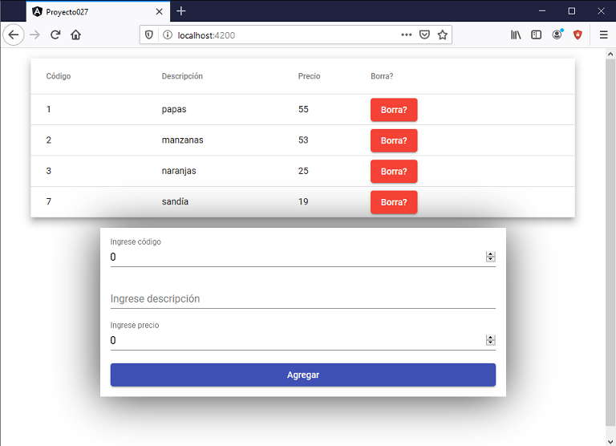

Angular material dispone de una componente para mostrar datos en una tabla.
Mostrar un listado de artículos (codigo, descripción y precio) mediante la componente mat-table.
Permitir borrar y agregar artículos.
Crearemos primero el proyecto
ng new proyecto027
Procedemos a instalar todas las dependencias de Angular Material ayudados por Angular CLI mediante el comando 'add':
ng add @angular/material
Modificamos el archivo 'app.module.ts' donde debemos importar MatTableModule, MatInputModule, MatButtonModule y FormsModule :
import { BrowserModule } from '@angular/platform-browser';
import { NgModule } from '@angular/core';
import { AppComponent } from './app.component';
import { BrowserAnimationsModule } from '@angular/platform-browser/animations';
import { MatTableModule } from '@angular/material/table';
import {FormsModule} from '@angular/forms';
import { MatInputModule } from '@angular/material/input';
import { MatButtonModule } from '@angular/material/button';
@NgModule({
declarations: [
AppComponent
],
imports: [
BrowserModule,
BrowserAnimationsModule,
MatTableModule,
MatInputModule,
MatButtonModule,
FormsModule
],
providers: [],
bootstrap: [AppComponent]
})
export class AppModule { }
Modificamos el archivo 'app.component.ts' con la lógica de nuestra componente:
import { Component, ViewChild } from '@angular/core';
import { MatTable } from '@angular/material/table';
@Component({
selector: 'app-root',
templateUrl: './app.component.html',
styleUrls: ['./app.component.css']
})
export class AppComponent {
columnas: string[] = ['codigo', 'descripcion', 'precio', 'borrar'];
datos: Articulo[] = [new Articulo(1, 'papas', 55),
new Articulo(2, 'manzanas', 53),
new Articulo(3, 'naranjas', 25),
];
articuloselect: Articulo = new Articulo(0, "", 0);
@ViewChild(MatTable) tabla1!: MatTable<Articulo>;
borrarFila(cod: number) {
if (confirm("Realmente quiere borrarlo?")) {
this.datos.splice(cod, 1);
this.tabla1.renderRows();
}
}
agregar() {
this.datos.push(new Articulo(this.articuloselect.codigo, this.articuloselect.descripcion, this.articuloselect.precio));
this.tabla1.renderRows();
this.articuloselect = new Articulo(0, "", 0);
}
}
export class Articulo {
constructor(public codigo: number, public descripcion: string, public precio: number) {
}
}
En este archivo también importamos la clase MatTable debido a que debemos obtener una referencia de la componente hija que definimos en:
@ViewChild(MatTable) tabla1: MatTable<Articulo>;
Luego mediante la variable tabla1 podemos llamar a métodos del objeto mat-table.
El atributo columna almacena los nombres con que se inician las propiedades matColumnDef de cada columna de la tabla:
columnas: string[] = ['codigo', 'descripcion', 'precio', 'borrar'];
La clase 'Articulo' se la declaró después de la clase 'AppComponent' (podemos perfectamente declararla en un archivo separado para mayor orden de nuestro código):
export class Articulo {
constructor(public codigo: number, public descripcion: string, public precio: number) {
}
}
El segundo atributo es un vector con componentes de tipo 'Articulo', lo iniciamos con 3 componentes (esta variable es la fuente de datos de la componente):
datos: Articulo[] = [new Articulo(1, 'papas', 55), new Articulo(2, 'manzanas', 53), new Articulo(3, 'naranjas', 25), ];
El atributo 'articuloselect' tiene la referencia de los datos que se cargan en el formulario:
articuloselect: Articulo = new Articulo(0, "", 0);
Los dos siguientes métodos permiten borrar y agregar una fila a la tabla:
borrarFila(cod: number) {
if (confirm("Realmente quiere borrarlo?")) {
this.datos.splice(cod, 1);
this.tabla1.renderRows();
}
}
agregar() {
this.datos.push(new Articulo(this.articuloselect.codigo, this.articuloselect.descripcion, this.articuloselect.precio));
this.tabla1.renderRows();
this.articuloselect = new Articulo(0, "", 0);
}
Codificamos la interfaz visual en el archivo 'app.component.html':
<table mat-table [dataSource]="datos" class="mat-elevation-z8" #tabla1>
<ng-container matColumnDef="codigo">
<th mat-header-cell *matHeaderCellDef> Código </th>
<td mat-cell *matCellDef="let articulo"> {{articulo.codigo}} </td>
</ng-container>
<ng-container matColumnDef="descripcion">
<th mat-header-cell *matHeaderCellDef> Descripción </th>
<td mat-cell *matCellDef="let articulo"> {{articulo.descripcion}} </td>
</ng-container>
<ng-container matColumnDef="precio">
<th mat-header-cell *matHeaderCellDef> Precio </th>
<td mat-cell *matCellDef="let articulo"> {{articulo.precio}} </td>
</ng-container>
<ng-container matColumnDef="borrar">
<th mat-header-cell *matHeaderCellDef> Borra? </th>
<td mat-cell *matCellDef="let j = index;">
<button mat-raised-button color="warn" focusable="false" (click)="borrarFila(j)">
Borra?
</button>
</td>
</ng-container>
<tr mat-header-row *matHeaderRowDef="columnas"></tr>
<tr mat-row *matRowDef="let row; columns: columnas;"></tr>
</table>
<div class="contenedor">
<mat-form-field>
<input matInput [(ngModel)]="articuloselect.codigo" type="number" placeholder="Ingrese código">
</mat-form-field>
<mat-form-field>
<input matInput [(ngModel)]="articuloselect.descripcion" type="text" placeholder="Ingrese descripción">
</mat-form-field>
<mat-form-field>
<input matInput [(ngModel)]="articuloselect.precio" type="number" placeholder="Ingrese precio">
</mat-form-field>
<button mat-raised-button color="primary" (click)="agregar()">Agregar</button>
</div>
Cuando definimos la etiqueta 'table' especificamos el enlace de la propiedad '[dataSource]' con nuestro vector definido en la clase:
<table mat-table [dataSource]="datos" class="mat-elevation-z8" #tabla1>
Para las columnas definimos etiquetas 'ng-container' iniciando la propiedad 'matColumnDef' con alguna de las componentes del atributo 'columnas', también creamos el título de la columna como su contenido:
<ng-container matColumnDef="codigo">
<th mat-header-cell *matHeaderCellDef> Código </th>
<td mat-cell *matCellDef="let articulo"> {{articulo.codigo}} </td>
</ng-container>
La columna para borrar tiene una lógica distinta ya que debemos mostrar un botón el cual al ser presionado llama al método que elimina un elemento del vector y actualiza la tabla:
<ng-container matColumnDef="borrar">
<th mat-header-cell *matHeaderCellDef> Borra? </th>
<td mat-cell *matCellDef="let j = index;">
<button mat-raised-button color="warn" focusable="false" (click)="borrarFila(j)">
Borra?
</button>
</td>
</ng-container>
Luego tenemos el formulario, tema que ya hemos visto en conceptos anteriores:
<div class="contenedor">
<mat-form-field>
<input matInput [(ngModel)]="articuloselect.codigo" type="number" placeholder="Ingrese código">
</mat-form-field>
<mat-form-field>
<input matInput [(ngModel)]="articuloselect.descripcion" type="text" placeholder="Ingrese descripción">
</mat-form-field>
<mat-form-field>
<input matInput [(ngModel)]="articuloselect.precio" type="number" placeholder="Ingrese precio">
</mat-form-field>
<button mat-raised-button color="primary" (click)="agregar()">Agregar</button>
</div>
la hoja de estilo de la componente 'app.component.css':
table {
width: 90%;
margin:1rem auto;
}
.contenedor {
display: flex;
flex-direction: column;
margin:1rem auto;
max-width: 600px;
box-shadow: -1px 3px 66px 0px rgba(0,0,0,0.75);
padding: 1rem;
}
Si ejecutamos la aplicación tenemos como resultado:
Podemos probar esta aplicación en la web aquí.
Es muy importante cuando trabajamos con Angular Material tener la documentación oficial de esta librería de componentes. En lo referente a tablas debemos acceder a table.